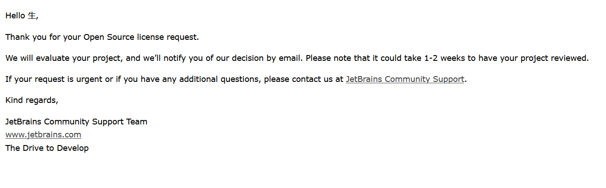

This is an open source project containing several Grease Monkey scripts designed to improve some of the experiences people have when browsing other Web pages in their browsers. For example, providing highlighting features available for all websites. Hide the top fixed bar at the right time etc.
提交表单后得到回信

[ ] 等待审核回信中...
Chrome 没有正常安装或者安装的是开发版 Chrome 导致 vs code 中的 debugger for Chrome 插件无法找到 Chrome 的解决方案
今天在尝试直接使用 Chrome 调试遇到这个错
Unable to launch browser: "Unable to find a Chrome installation on your system. Try installing it, or providing an absolute path to the browser in the “runtimeExecutable” in your launch.json.
原因如标题所述。